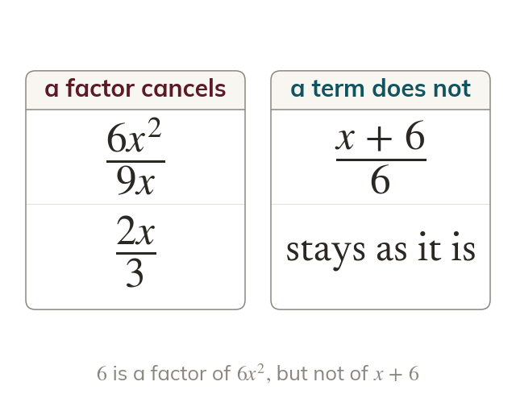
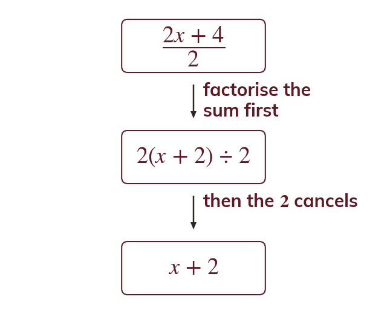
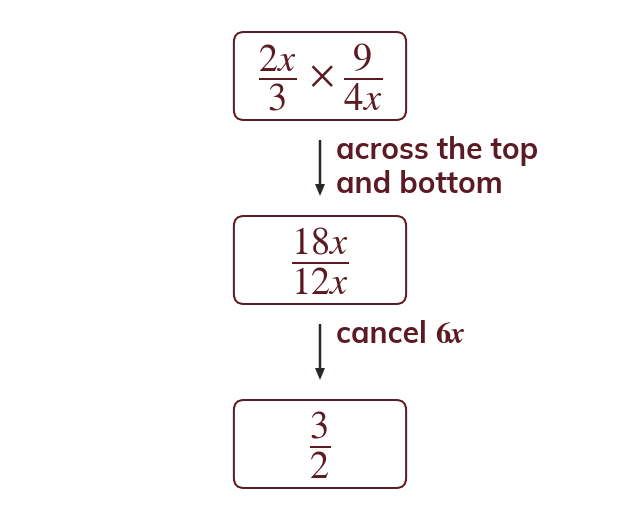
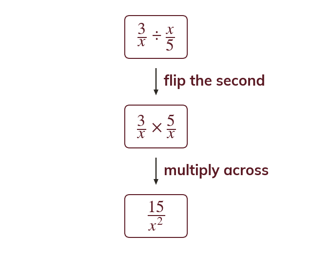

The same rules as numbers
An algebraic fraction cancels by a common factor exactly as a number fraction does. Powers of a letter cancel by subtracting indices, so
Algebraic fractions follow exactly the same rules as number fractions. Cancelling and multiplying them now is the groundwork for the harder equations of GCSE.
Work down the page at your own pace. Write every answer in your book first, then click to check it.
Read each card, then follow the worked examples one step at a time.

An algebraic fraction cancels by a common factor exactly as a number fraction does. Powers of a letter cancel by subtracting indices, so

Only a factor of the whole top and bottom can cancel. One term of a sum never cancels. cannot become
Pick an answer. If it's wrong, the feedback tells you which mistake it was.
Read each card, then follow the worked examples one step at a time.

Multiplying algebraic fractions multiplies the numerators together and the denominators together. Cancelling any numerator with any denominator first keeps the expressions small.

Dividing by an algebraic fraction multiplies by its reciprocal. So dividing by is multiplying by
Pick an answer. If it's wrong, the feedback tells you which mistake it was.
Finished? Next lesson: 8.16.1 Compasses and Perpendicular Bisectors.
For each skill, tap the one that is true for you today. Your Revise pages start with anything you mark Not yet.
Your ratings are saved on this device only.
Log in, then search for a code to practise that skill.
Videos, worksheets and more on each part of this lesson.